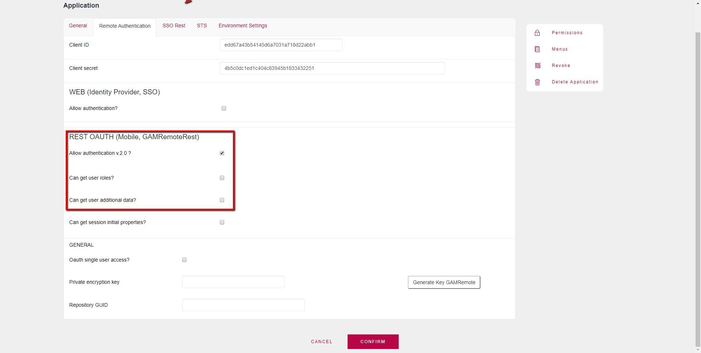

It's a REST service to obtain the user's information. Through the service /oauth/gam/userinfo it is possible to obtain the user's information. Endpoint$ServerURL/oauth/gam/userinfo ConfigurationFor this to work, a certain configuration is needed at the level of the GAM Application where the service is configured: 
GETIn this case, the authentication token (&access_token) goes in the header.
&method = !"GET"
&headername = "Authorization"
&headervalue = "OAuth " + &access_token
&getstring = &urlbase + "/oauth/gam/userinfo"
&httpclient.AddHeader(&headername, &headervalue)
&httpclient.AddHeader("GeneXus-Agent","SmartDevice Application")
&httpclient.Execute(&method, &getstring)
&httpstatus = &httpclient.StatusCode
&result = &httpclient.toString()
POSTIn this case, the authentication token (&access_token) goes in the body.
&method = !"POST"
&getstring = &urlbase + "/oauth/gam/userinfo"
&httpclient.AddHeader("GeneXus-Agent", "SmartDevice Application")
&httpclient.AddVariable(!"access_token", &access_token)
&httpclient.Execute(&method, &getstring)
&httpstatus = &httpclient.StatusCode
&result = &httpclient.toString()
Response
{
"guid":"139f4332-3f40-47b0-8fb4-ee7b3dbddc4f",
"username":"admin",
"email":"admin",
"verified_email":true,
"first_name":"Administrator",
"last_name":"User",
"external_id":"",
"birthday":"2000-01-01",
"gender":"N",
"url_image":"https://",
"url_profile":"",
"phone":"+598",
"address":".",
"city":".",
"state":".",
"post_code":".",
"language":"Eng",
"timezone":".",
"CustomInfo":"",
"roles":["is_gam_administrator"]
}
|
| Backlinks |
| Toc:GeneXus Access Manager (GAM) |